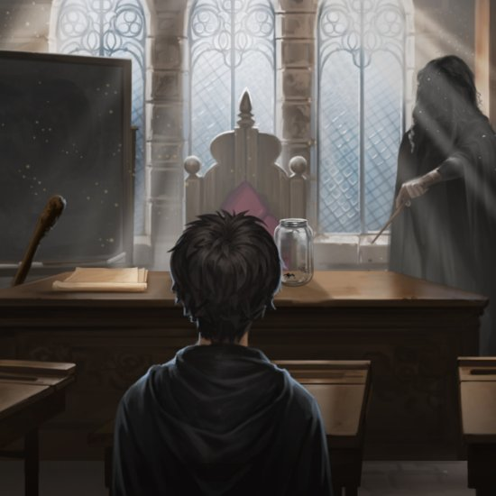
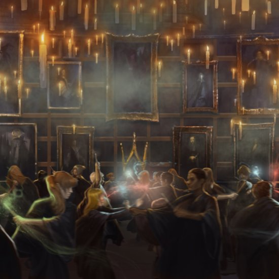

Avada Kedavra, também é conhecido como Maldição Mortal, mata uma pessoa instantaneamente e sem ferimentos. Não há contrafeitiço para isso,
e a única pessoa que sobreviveu a essa maldição foi Harry Potter. As maldições mais terríveis no mundo mágico são Império,
Cruciatus e Avada Kedavra, elas são chamadas de Maldições Imperdoáveis; o uso de qualquer uma delas em outro ser humano é
punido com prisão perpétua em Azkaban.
Aparição pela primeira vez em: A Pedra Filosofal
embora não seja identificado até O Cálice de Fogo

A Maldição Cruciatus causa extrema dor na vítima. Junto com a Maldição Imperius e Avada Kedavra
(a Maldição Mortal), a Maldição Cruciatus é considerada uma das mais terríveis maldições do mundo
mágico, chamadas de Maldições Imperdoáveis; o uso de qualquer uma das três em outro ser humano será
punido com prisão perpétua em Azkaban.
Aparição pela primeira vez em: O Cálice de Fogo

O feitiço Expelliarmus é um feitiço Desarmante; ele arranca a arma das mãos da vítima.
Quando é usado com maior força (ou quando a vítima não está armada) pode erguer o oponente
do chão.
Aparição pela primeira vez em: A Câmara Secreta